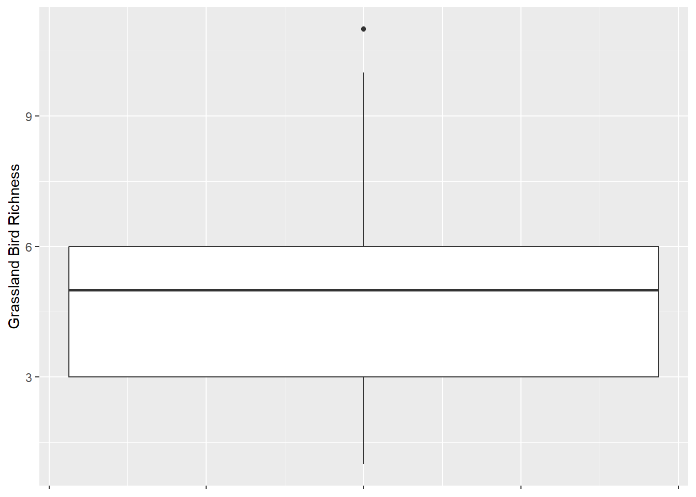
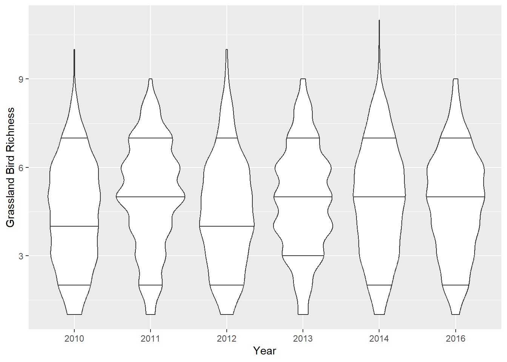
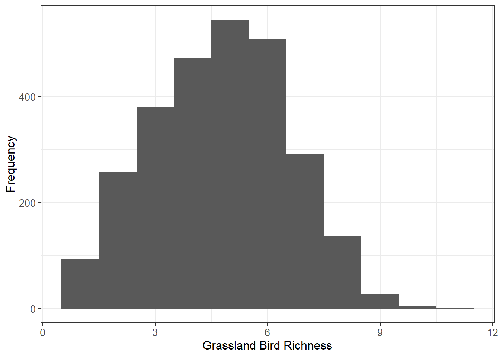
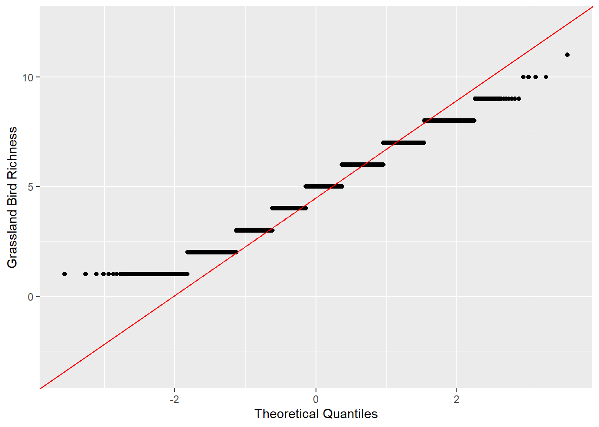
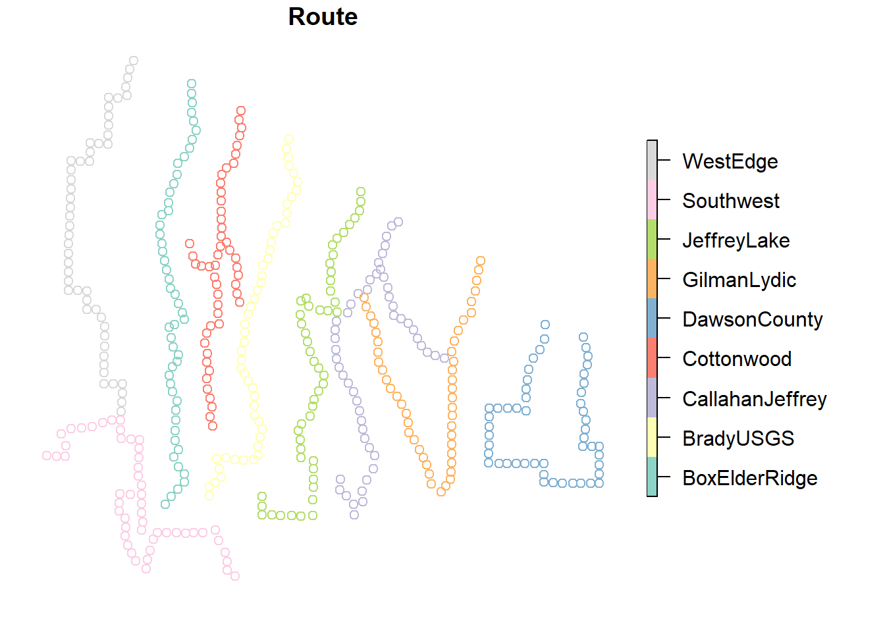

Data exploration
Assigned Reading:
Zuur, A. F., E. N. Ieno, and C. S. Elphick. 2010. A protocol for data exploration to avoid common statistical problems. Methods in Ecology and Evolution 1: 3-14. DOI: 10.1111/j.2041-210X.2009.00001.x
Key takeaways from Zuur et al. (2010):
Things we should explore and check per Zuur et al. (2010). Note: we don’t have to do every step every time!
- Outliers Y & X
- Outliers in response variable vs in covariates - to be dealt with differently
- Transformation less desirable for response variable than in covariates?
- Homogeneity Y
- Normality Y
- Example of importance of biological intuition and graphical
investigation
- Transformation to get normality may not be desirable–will learn more when we discuss generalized linear models.
- Example of importance of biological intuition and graphical
investigation
- Zero trouble Y
- Possibility of complete separation–which is problematic for binary response variables.
- Can (sometimes) be dealt with by using a zero-inflated error distribution.
- We will not be covering multivariate analyses in this course! (but they’re super cool, so go check them out)
- Collinearity X
- VIFs, or common sense or biological knowledge
- Also… are pairwise comparisons worthwhile?
- Relationships Y & X
- Multi-panel scatter plots useful here.
- But nonlinearities can obfuscate relationships.
- Interactions
- Are data balanced?
- coplots (i.e., ggplot2::facet_wrap)
- Independence Y
- ACF, variograms, Moran’s I for checking for temporal and spatial non-independence
- We will focus on this in our Autocorrelation Topic.
BUT: Biological intuition = key to make decisions about stats
- Hypothesis testing vs hypothesis generation
- One solution - two data sets - one to create hypotheses and one to test them
- But only practical for large data sets
- Graphical tools very powerful, but other summaries of the data are
also very powerful:
- What is the ‘central tendency?’
- How many replicates do you have, etc.?
Data exploration examples:
For today’s lab exercise, please download this R script. We will work through it as we go through the examples and challenges below. The data comes from:
Roberts, C. P., Scholtz, R., Fogarty, D. T., Twidwell, D., & Walker Jr, T. L. (2022). Large‐scale fire management restores grassland bird richness for a private lands ecoregion. Ecological Solutions and Evidence, 3(1), e12119.
Outliers, zero trouble, balance
Zuur et al. recommends plotting your data using boxplots and dotcharts to detect outliers. Violin plots and histograms are also great options. I don’t personally use dotcharts… because I see the point of them.
Important: If you have outliers, removing them is likely not the first thing you should do. There may be other error distribution options you could use or transformations. It also could be a hint that you haven’t gotten a sufficiently large sample size to flesh out your population’s distribution
Boxplot

Violin plot
Violin plots show more data distribution details, but they can be busy and tough to interpret. These are conditional (by year) and display the 10th, 50th (i.e., median), and 90th quantiles as horizontal lines.

Histogram
Histograms show frequency of values and the shape or distribution of the values. Here’s a histogram of our response variable:

Challenge 1:
Check the minimum and maximum values (i.e., the ‘range’) for the response variable and each predictor variable. What do you notice about the ranges? Are we going to run into “zero trouble” with the response variable?
Create histograms for i) mean tree cover, ii) TSF, iii) and standard deviation in tree cover. BONUS: Make them all in a single ggplot call.
Check for outliers in the response variable (grassland bird species richness) and predictor variables.
Are the data ‘balanced’ in terms of sampling? Create figure(s) or table(s) to answer this. Some of the figures you’ve already created may also help…
Normality and Homogeneity in Y
Some statistical tests assume your response variable conforms to a normal distribution. We will learn about probability/error distributions in our Probability Distributions Topic. But for now, let’s forge ahead and make a Q-Q plot (quantile-quantile plot):

Challenge 2:
Does the response variable fit the “normality” assumption?
Collinearity, relationships between X and Y
It’s absolutely important to check for pairwise correlations, which
we can do quickly with the pairs and cor
functions. For the cor function, I typically use the
default “Pearson” method, but you should read the R Documentation for
other options (kendall, spearman). However, pairwise correlations should
be taken with a grain of salt. See this quote from the R Documentation
for the “performance::check_collinearity()” function:
“Multicollinearity should not be confused with a raw strong correlation between predictors… Remember: ”Pairwise correlations are not the problem. It is the conditional associations - not correlations - that matter.” (McElreath 2020, p. 169)”
We will talk about Zuur’s preference of “variance inflation factors” to check for collinearity in the linear models review Topic.
Challenge 3:
Check for pairwise correlations between predictor variables graphically using the
pairsfunction.Check for pairwise correlations between predictor variables statistically using the
corfunction.Are there “linear” relationships between the response variable and predictor variables? How can you use output from the
pairsfunction to tell?
Is there actually a relationship between X and Y?!
Let’s also plot the response/dependent variable (grassland bird richness) against potential predictor/independent variables. Here, I use quick-and-dirty generalized additive models per ggplot2::geom_smooth and then combine the plots with cowplot::plot_grid

Interactions between predictor variables
Two-way interactions are what we’re looking for here. There is (technically) no limit to how many interactions you can have, but I find it gets super confusing to interpret interactions past three-way interactions–and even those are crazy for me.
Challenge 4:
- Are there interactions between predictor variables that we should consider? Recreate some ggplot2::facet_wrap plots to check.
Bonus Round: Spatial Patterns
When we collect ecological data, unless we’re doing it in a lab, it’s never collected without spatial context. Whenever there’s spatial context, it’s critical to look for spatial patterns in data. Recall that the data we’re working with has a sampling unit of: stops along roadside surveys by year. The stops have spatial coordinates (easting and northing from UTM Zone 14). What could we learn if we simply mapped out some of the variables over time?
Bonus Challenge
Map grassland bird species richness by year. Do you see any spatial patterns? Use the
ggplotandsfpackages to do this!
